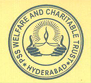
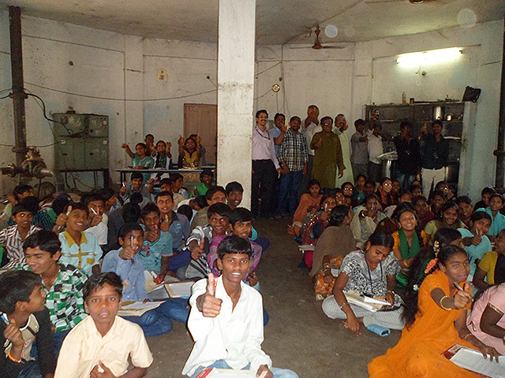
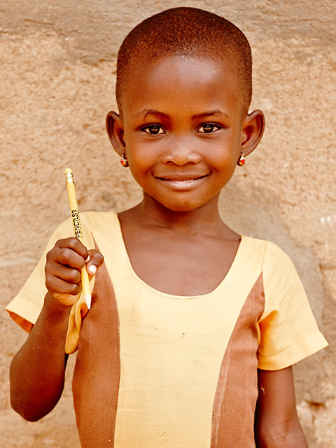
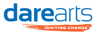
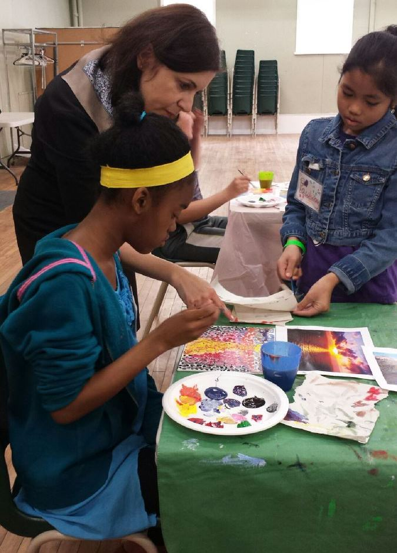
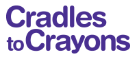
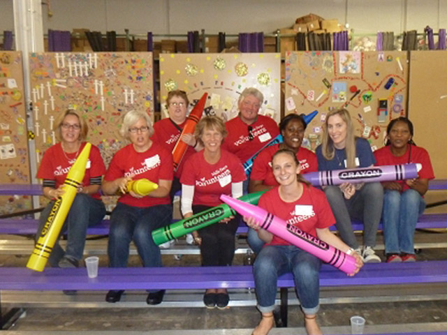

This link leads to a website that is not operated by Wells Fargo.
We do not control the website. Wells Fargo has provided this link for your convenience,
but does not endorse and is not responsible for the content, links, privacy policy, or security policy of this website.
This link leads to a website that is not operated by Wells Fargo.
We do not control the website. Wells Fargo has provided this link for your convenience,
but does not endorse and is not responsible for the content, links, privacy policy, or security policy of this website.

Charitable Giving |
||
Together, we can make a difference |
||
|
At Wells Fargo, we’re committed to providing community solutions – local responses to local needs. We promote economic development and self-sufficiency through community development, financial education, cash contributions, affordable housing, environmental stewardship, and through the efforts of our enthusiastic team member volunteers. For philanthropic activities and investments last year, Wells Fargo reached important milestones:
And now, by working together with you, we can make a difference in our international communities. You are invited, for the third year in a row, to cast a vote for one of four nonprofits (noted below) that make a difference in our local communities. Based on this poll held at our Wells Fargo Sibos reception, Wells Fargo will donate a total of USD$10,000 to these four charities. |
|
|
|
 Potukuchi SomaSundara Trust (India) Website: http://www.psstrust.org
The Potukuchi SomaSundara Trust (PSS Trust) brings Below Poverty Line (BPL) children above the poverty line through education, coaching and career guidance. The PSS Trust also prevents child marriages especially for adolescent girls coming from underprivileged families by empowering them with education. The Trust has three branches in Miyapur, BHEL and Bollaram. The trust provides students with afterschool education programs, college fees, notebooks and textbooks, meals, bus passes, and transportation for girls.  “The PSS Trust has successfully provided education to students and helped stop early child marriages. As of today, 22 sponsored students are now employed, 12 are studying engineering, 50 are in diploma programs and 120 students are in the 10th grade class. I’m proud that our Wells Fargo volunteers are contributing to the program by teaching and providing career-guidance to these students.” — Moitreyee Das, Implementation Consultant, Wells Fargo India Solutions
Pencils of Promise (Ghana) Website: https://pencilsofpromise.org
Pencils of Promise (PoP) is a for purpose organization that builds schools, trains teachers and funds scholarships. PoP brings life-changing education to children around the world by building quality schools and sustainable education programs.  “Pencils of Promise (PoP) is an extraordinary organization that is fully committed to helping children obtain access to education. We have seen what a significant impact PoP has made for children all around the world, enabling them to fulfill their dreams of learning through numerous programs including school builds, student scholarships, teacher training, and water and health programs. The organization has achieved phenomenal results including building 226 schools around the world since 2009 and breaking ground on a new school every 90 hours.” — Anne Komada, Global Financial Institutions Chief Administrative Officer group
 DareArts (Canada) Website: http://www.darearts.com
DAREarts uses the arts to empower at-risk Canadian children with the confidence and courage to become leaders who ignite change. By harnessing the power of the arts with the DARE of Discipline, Action, Responsibility and Excellence, they unlock their potential and spark change in their lives and communities.  “By volunteering at DAREarts, I have a unique opportunity to inspire at-risk children aged 9–14 with a lifelong motivation for creative thinking and excellence in their lives through art. It is the most rewarding volunteer experience I have ever experienced, because I get to apply my visual arts teaching background by working as a teacher’s assistant in workshops in the underserved communities of Toronto. In turn, the children develop their life and leadership skills by teaching their classmates what they learn and contributing to safe and vibrant schools and communities. We call the kids who are chosen to come to DAREarts out of their classrooms ‘delegates’ because we ‘dare’ them to then go back to their respective schools as leaders.” — Zlata Huddleston, Global Financial Institutions Regional Manager for Canada and the Caribbean
 Cradles to Crayons (Boston, Massachusetts) Website: http://www.cradlestocrayons.org/boston
Cradles to Crayons provides children from birth through age 12, living in homeless or low-income situations, with the essential items they need to thrive—at home, at school and at play. Cradles to Crayons collects new and nearly new children's items through community drives and corporate donations and distributes them to disadvantaged children across the state through a collaborative network of social service agencies and school partners.  “Cradles to Crayons (C2C) has become an essential part of my volunteering, and I’m grateful to be able to share that sense of community with both my colleagues and my family. I believe it is impossible to walk away from C2C without feeling fulfilled, humbled, and optimistic about the impact every single one of us can make! It is for that reason that I try to go as often as I can – and the reason why my children constantly ask when it’s time to go ‘pack backpacks for the kids at C2C.” — Laura Fay, Communications Manager, Asset Management Group “What many of us take for granted is a significant need for so many kids and families. I love what Cradles to Crayons does and their understanding and effort to improve the self-worth of these underprivileged kids. Giving these underprivileged kids clothes is one step in improving their lives and self-image.” — Tim Curtin, National Sales Manager, Asset Management Group |
||